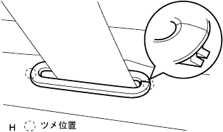

Front sheet Assembly assembly |
| 1. Front sheet leg LH installation |
Front sheet frame tightly tighten the front seat leg LH with six bolts.
| 2. Frame weight front No.2 installation |
The frame weight front No.2 is dented and attached to the front seat frame ASSY.
| 3. Front seat Batsuku stopper Assy RH installation |
Tighten the front seat Batsuku stopper ASSY RH with a nut.
| 4. Seat cushion spring dampa installation |
In the bolt, attach the seat cushion spring damper.
| 5. Reclining release handle SUB-ASSY No.1 Installation |
Attach the reclining adjuster spacer to the frame.
Put the reclining tension bar between the frame and the reclining release handle, and the torsion bar is used to the frame.
Follow the reclining release handle on the frame and attach a new E -ring.
| 6. Front sheet plate spring LH installation |
| 7. Seat track control cable Assy installation |
With two bolts, attach the seat track control cable Assing.
| 8. Front seat cross -cover (rear side) Installation |
Attach the front seat cross cover and attach a screw.
| 9. Reclining torsion bar mounting |
The reclining torsion bar is compatible with the frame.
| 10. Lear seat turn lock plate No.1 LH installation |
With three screws, attach the rear seat turn lock plate No.1 LH.
| 11. Reclining Adjusta Arm CTR LH W/Cable installation |
Attach the reclining adjuster spacer to the frame.
Reclining adjuster arm CTR LH W/Cable cable to the frame and attach a new E -ring.
| 21 |
Make the front seat cross -cover (the rear of the inner).
Attach the screw.
| 13. Previous front seat cross -cover (rear outer) installation |
Attach the front seat cross cover and attach a screw.
| 14. Previous front seat Batsuku cover (front side of the outer) installation |
Make the front seat cross -cover cover (the rear side of the outer).
 |
Attach the screw.
| 15. Front sheet outa belt assessed |
 |
Attach the front sheet outa belt asy LH (retractor portion) with two bolts.
| 16. The front seat shoulder da belt guide installation |
Pass the claw through the seat belt and attach the front seat sourd belt guide.
| 17. List seat belt holder installation |
Make the claws and attach the rear seat belt holder.
| 18. Lear seat belt holder No.2 installation |
Pass the claw through the seat belt and attach the No.2 rear seat Beltholder.
| 19. Front seat cushion shield LWR LH installation |
 |
Pass the seat belt and attach the front seat cushion shield LWR LH.
| 20. Sub -seat lock control cable installation |
Attach a sub -sheet lock control cable.
| 21. Reclining adjuster inside cover LH installation |
 |
Sub -seat lock control cable is used to match the claws and reclining agastain side cover LH is attached.
Attach the screw.
| 22. Reclining adjuster inside cover RH installation |
Make the claws and attach the reclining adjustment side cover RH.
Attach the screw.
| 23. Front seat cushion cover & pad LH installation |
The front seat cushion cover & pad is used to the front seat cushion shield LWR LH.
The front seat cushion cover & pads will surely make the J hook on the front side.
Turn the claw of the seat cushion frame LH.
| 24. Front seat backpad (cover tsuki) LH installation |
Use a hogling plier to attach the front seat cross cover & pad LH by hogling.
| 25. Front seat headrest support installation |
 |
Attach 2 front seat headrest support to the seats.
| 26. Leary seat back rock bezel UPR installation |
 |
Pass the seat belt and attach the front seat belt hole cover.
The claws of the rear seat cross bezel UPR are used.
Attach two screws.
Tighten the ankabolt of the outa seat belt.
| 27. Front seat backboard SUB-ASSY LH installation |
Attach the cable through the seat belt.
Match the claws and attach the seat crossboard.
Raise the lever of the seat crossboard and attach the screw.
The lower side of the seat cross cover LH is used to the front seat crossboard.
| 28. Rear seat shoulder belt cover LH installation |
|  |
Pass the seat belt and attach a rear seat shoulder belt cover LH.
| 29. Front seat cushion shield LH installation |
Make the claws of the cushion shield.
Attach the front seat cushion shield LH with a screw.

| 30. Reclining adjuster release handle LH installation |
Match the claws and attach the reclining adjuster lary handle LH.
| 31. Lon seat Innabelt Assy LH installation |
 |
Attach the front sheet innabelt ASSY LH with a bolt.
Connect each connector, connect and fix the wire harness portion.
| 32. Front seat cushion shield Inn LH mounting |
Make the claws of the cushion shield.
Attach the front seat cushion shield INN LH with a screw.
| 33. Front sheet headrest ASSY installation |
Attach the front seat headrest ASSY.